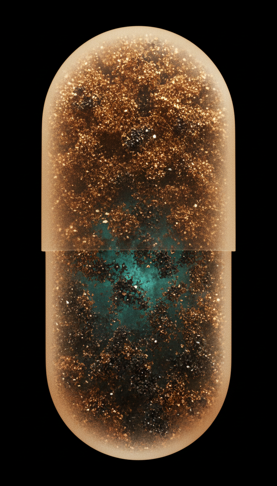
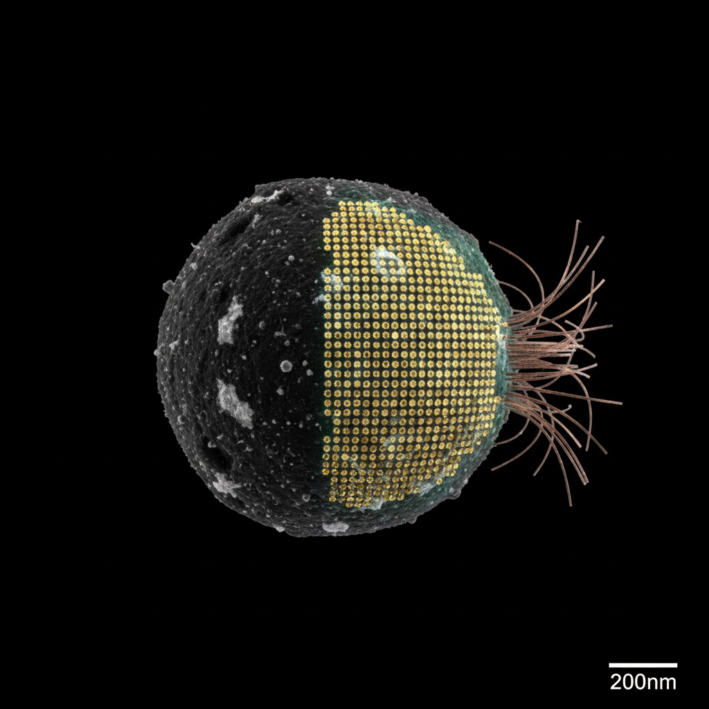
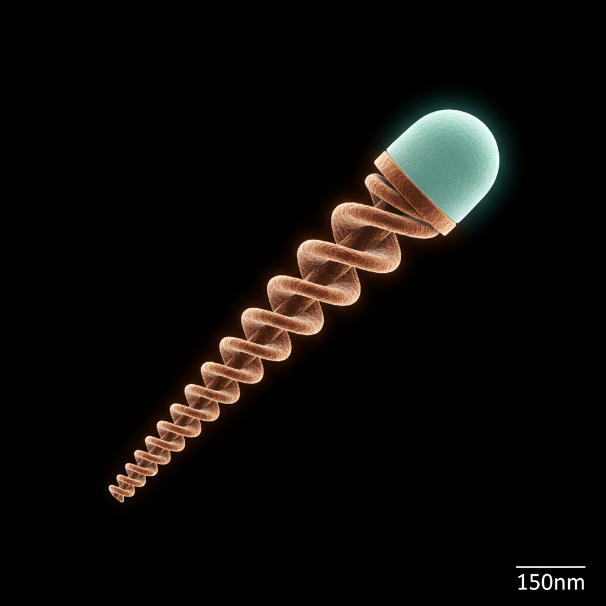
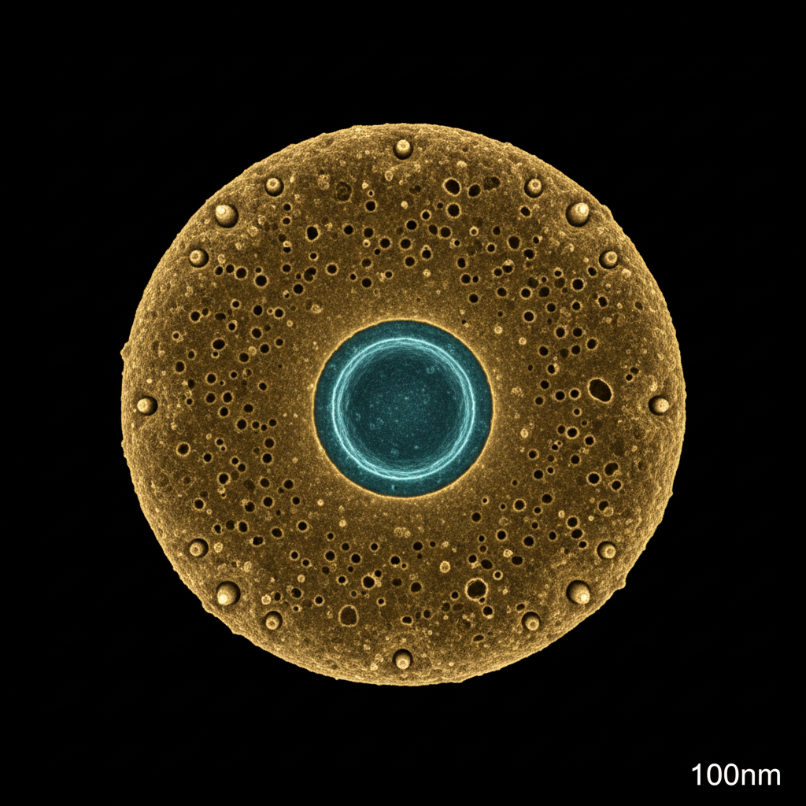
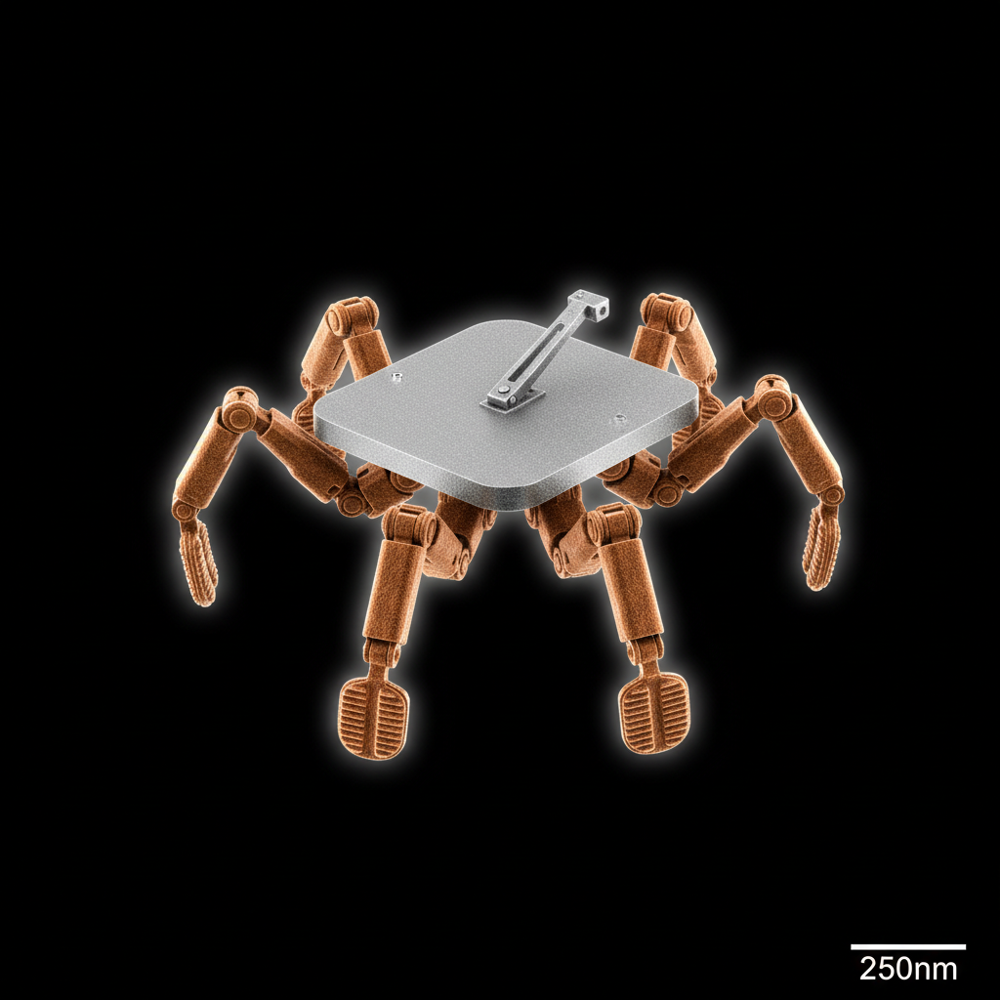
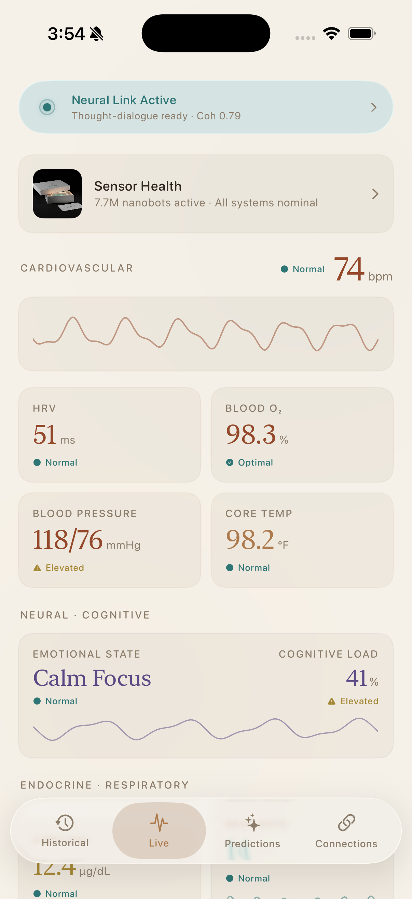
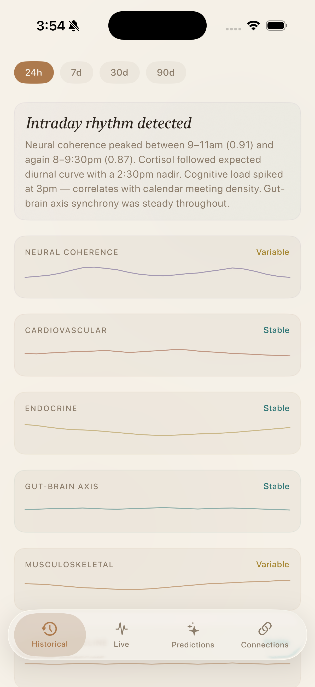
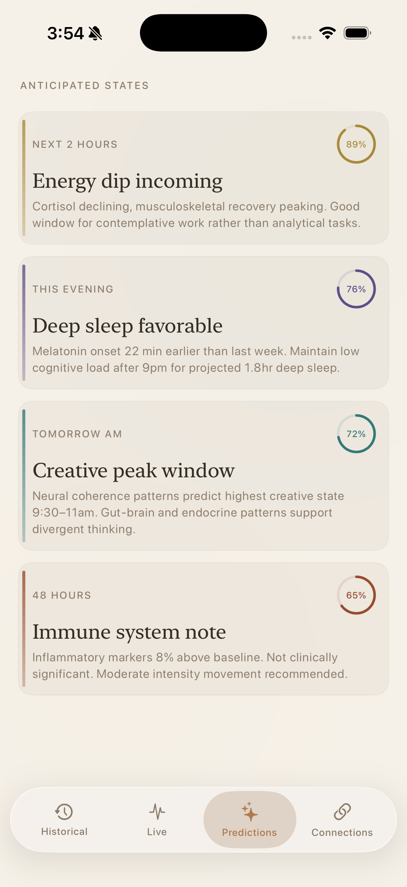

1 / 8
Press N for notes
Trojan Horse / MacGuffin Project Critique
Holistic
When an AI knows your complete physiological state, does it set you free — or does it become the most intimate form of surveillance ever created?
Holistic is a Trojan Horse project. On the surface it's a wellness device — a capsule you swallow. What it actually does is force a question: when an AI has complete physiological access to a body, does that set you free, or does it become the most intimate form of surveillance ever created? That's the question I'm sitting with tonight.
Archaeology
Two histories converge here.
AI Timeline
2022
ChatGPT · 100M users in 2 months
2024
On-device AI in consumer hardware
The technology scaled. The epistemology didn't.
Design Lineage
User-centered
assumes a generic user
→
Participatory
same table, same shape
→
Co-design
single ontological frame
→
Pluriversal
question the frame itself
Escobar · Fry · Willis — Holistic sits at this edge.
Two histories converge here. The AI timeline — from Dartmouth in '56 through transformers and ChatGPT. Every leap promised personalization and delivered the same universal model to every user. ChatGPT hit 100 million users in two months — the fastest adoption of any consumer technology in history. But the epistemology, whose ways of knowing count, didn't scale with it. On the design side: user-centered assumed a generic user. Participatory invited users to the table but kept the shape. Co-design shared authorship inside a single frame. Pluriversal design — Escobar, Fry, Willis — asks what if the frame itself is the problem? That's the edge Holistic sits on.
The Paradox
How the project found its real question.
01
Life OS — self-report wellness app
Worked as demo. Wrong model — forces epistemology into pre-chosen categories.
02
Fair Game · Basu & Das, Cambridge 2025
Auditor-debiasing RL loop. Adapted: audit for epistemological bias, not demographic.
03
Ingestible BCI — observe, don't ask
Three days of body data beats any questionnaire. Interaction shifts from typing to thinking.
04
Trojan Horse — wellness device, real question
Whose model of intelligence, health, and flourishing gets encoded in the architecture?
I started with a wellness app called Life OS — onboarding flow where users self-reported their energy, values, thinking style. It worked as a demo but the model was wrong: you're forcing self-knowledge into categories the system picked. Then I found the Fair Game paper — Basu and Das, Cambridge 2025 — an auditor-debiasing RL loop that monitors AI for bias. I adapted it for epistemological bias, not demographic. But self-reported data is still shallow. What if the AI didn't need you to describe yourself at all? An ingestible BCI that observes your body for three days builds a richer, more honest profile. Interaction shifts from typing to thinking. And that's the Trojan Horse — the capsule looks like wellness, but it forces the real question: whose model of intelligence, health, and flourishing gets encoded?
The Object

holistic-capsule.jpg
';">
Swallow a capsule. Three days later, the AI knows you completely.
- 7.7 million nanobots — seven body systems, continuous monitoring
- Not step counts. The complete reality of being in this body, right now
- Thought-dialogue — you think, the AI responds; phone is the window, not the UI
Grounded in real research: FDA ingestible sensors · MIT galvanic cells · ETH Zurich microrobots in pig vasculature · Synchron endovascular BCI (zero adverse events, n=10).
You swallow a capsule. Within three days the AI knows you completely. 7.7 million nanobots disperse through every body system — nervous, cardiovascular, respiratory, endocrine, digestive, immune, musculoskeletal. Not step counts, not heart rate snapshots — the complete reality of what it feels like to be in this body right now. You think, and the AI responds through a neural interface. The phone app is a window into your data, not the primary interaction. And all of it is grounded in real research — FDA ingestible sensors, MIT galvanic cells, ETH Zurich microrobots in pig vasculature, Synchron's endovascular BCI with zero adverse events across ten patients.
The Swarm
Five nanobots. Seven systems. One continuous portrait.

nanobot-neural.jpg
';">
Neural200nm

nanobot-cardiovascular.jpg
';">
Cardiovascular150nm

nanobot-endocrine.jpg
';">
Endocrine100nm
nanobot-immune.jpg
';">
Immune80nm

nanobot-musculoskeletal.jpg
';">
Musculoskeletal250nm
Each navigates, anchors, monitors. The capsule is the seed. The body becomes the network.
Five types, seven systems, one continuous portrait. Each nanobot is sized for the tissue it lives in — neural bots the largest at 200nm, immune bots the smallest at 80nm so they can move through capillaries. Each navigates to its target system, anchors, and begins continuous monitoring. The capsule is the seed. The body becomes the network. After three days, seeding is complete and the system is fully resolved.
The Interface
The app shows what the capsule data becomes.

screenshot-live.png
';">
Live · Real-time body state

screenshot-historical.png
';">
Historical · Auto-detected epistemology

screenshot-predictions.png
';">
Predictions · Cross-system synthesis
Let me show you.
The app is where the capsule's data becomes something you can see. Live view — real-time body state, neural link active. Historical — your epistemological profile, auto-detected from three days of observation. Predictions — cross-system synthesis with confidence scoring. The phone is intentionally secondary. The primary interaction is thought-dialogue through the neural interface. The app is the dashboard. Let me walk through the live demo.
Open Questions
What this work is still sitting with.
Individual vs. Communal
If epistemology is inherently social, how does a personal system honor communal knowledge-making?
The Consent Problem
When the device is inside your body, what does "opt out" mean? No framework covers continuous full-body monitoring.
The Classification Tension
The app categorizes how you think. Is that liberation — or reduction?
Three things the work is still sitting with. First — individual versus communal. Both Afrofuturism and Escobar argue epistemology is inherently social. Holistic is a personal system. How does personal intelligence honor communal knowledge-making? Second — the consent problem. When the device is inside your body, what does "opt out" even mean? Three U.S. states protect neural data; none address continuous full-body monitoring. Third — the classification tension. The app literally categorizes how you think — Analytical 35%, Intuitive 28%. Is a machine classifying your relationship with knowledge itself an act of liberation, or an act of reduction? I don't have settled answers.
The capsule appears to be a wellness device. What it actually does is force the question: in the age of AI, who gets to know you — and on whose terms?
The answer depends entirely on whose values are encoded in the architecture.
Close with the question, not an answer. The capsule appears to be a wellness device. What it actually does is force the question into the room — in the age of AI, who gets to know you, and on whose terms? The answer depends entirely on whose values are encoded in the architecture. Thank you. Open to critique.